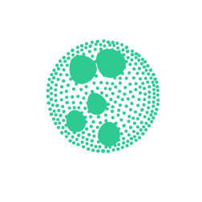
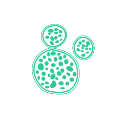
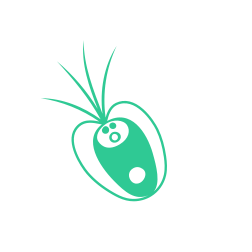
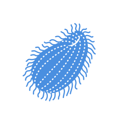
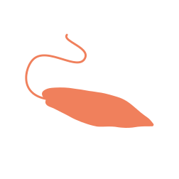
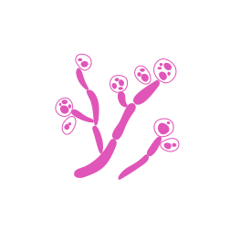

Most human disease work happens in a handful of species. Computational biologists
at Arcadia score how closely each organism's predicted protein structures match the
human versions, and surface the ones that come out closer than their evolutionary
distance would suggest — that analysis is searchable in
Zoogle.
My part is downstream of it: taking those candidates to the bench and working out
whether they behave like usable models.
Model organisms
Disease models
Bench validation
Imaging and phenotyping
Unusual organisms rarely come with established assays, so much of the work is
building them: quantitative live-cell imaging, high-content and 3D phenotyping, and
working out how to measure a phenotype in a species nobody has measured before.
Live imaging
Phenotyping
Microscopy
Earlier: the actin cytoskeleton
My PhD was on branched actin in fission yeast — how a cell positions the
machinery that builds it. The adaptor Bbc1 controls where the WASP protein Wsp1 sits
within an endocytic patch, which changes how far the patch internalises. My postdoc
moved to Chlamydomonas reinhardtii, asking how the Arp2/3 complex is
regulated in an organism with no conventional nucleation-promoting factors. The
endocytosis sandbox below is built from the thesis.
S. pombe
Chlamydomonas
Arp2/3
Previously
2021–presentScientist · Arcadia Science · Emeryville, CA
Chlamydomonas

Volvox

Chlorella

Tetraselmis
Micromonas
Isochrysis
Phaeodactylum
Nannochloropsis
Paramecium

Tetrahymena

Euglena
Dictyostelium

Candida
2020–21Postdoc, Avasthi Lab · Geisel School of Medicine at Dartmouth · Hanover, NH
Chlamydomonas
2014–20PhD, Sirotkin Lab · SUNY Upstate Medical University · Syracuse, NY · thesis
S. pombe
H. sapiens cell lines
M. musculus
2010–14B.Sc. Molecular Biology · Lipscomb University · Nashville, TNSummer research in the Williams Lab and the Millimaki Lab
C. elegans
H. sapiens cell lines
02 — Playground
Papers you can play
Four models from the work below, written in Python and run in your browser via
Pyodide — no server, no install.
The first is a sandbox built from my thesis: pick a genotype and watch a fission yeast
endocytic patch succeed or fail the way the mutants actually do.
Downloads the Pyodide runtime (~10 MB) the first time.
03 — Publications
Publications
Complete list, newest first. Everything from Arcadia is open access on
The Stacks,
published as the work happens — including observations and dead ends that
wouldn’t clear the bar for a conventional paper.
Live indexes: Google Scholar ·
ORCID.
The two mutants are not slower in the same way: cpc1-1 loses more speed, ida4 more sprint.Six compounds at 50 µM. Rescue is mutation-specific — linsitinib improves cpc1-1 and makes ida4 worse; only Torin2 helps both.
The phenotype-o-mat: a flexible tool for collecting visual phenotypes
Mechanisms of Wiskott–Aldrich syndrome protein Wsp1 positioning and regulation at sites of endocytosis in S. pombe
MacQuarrie CD
PhD thesis, SUNY Upstate Medical UniversityThesisRead
Chapter 3. Losing Vrp1 costs the patch about a third of its actin and a third of its reach. Bars are the midpoint of each reported range: actin 33–43%, internalisation 28–40%, Hob1 25–29%.
Distance travelled by the tip markers End4 and Ent1, the readout for force generated. Deleting Bbc1 doubles it; removing the Myo1 SH3 domain that retains Wsp1 cancels that again.
2018
Adaptor protein Bbc1 regulates localization of Wsp1 and Vrp1 during endocytic actin patch assembly
MacQuarrie CD, Mangione MSC, Carroll R, James M, Gould KL, Sirotkin V
Bigelowiella longifila catching prey with one of its extensions — the behaviour
behind the chlorarachniophyte paper below, and behind the “Hunting cell”
simulation in the playground.
05 — Contact
Get in touch
Happy to talk about organisms, microscopy, and phenotyping.